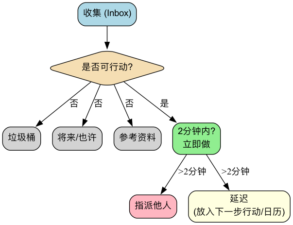

GTD (搞定)¶
我们的大脑，天生是一个用于产生想法的、卓越的“CPU”，但它却是一个极其糟糕的、用于存储信息的“硬盘”。当我们试图用大脑去记住所有待办事项、预约、想法和承诺时，它就会被这些“未尽事宜”所占据，导致压力、焦虑和思维混乱，无法专注于眼前的工作。GTD（Getting Things Done，通常译为“搞定”），是由生产力大师戴维·艾伦（David Allen）创建的一套享誉全球的个人生产力系统和工作流管理方法。
GTD的核心理念在于，通过将你头脑中所有悬而未决的“杂事（Stuff）”，都捕捉到一个外部的、可信赖的系统中，并遵循一套清晰、严谨的流程对其进行组织和处理，从而实现一种“心如止水（Mind Like Water）”的、无压力的、高度专注和高效的工作状态。它不是一个简单的时间管理技巧，而是一套完整的、旨在解放你的大脑、让你能从容应对复杂工作与生活的操作系统。
GTD的五个核心步骤¶
GTD的整个工作流程，由五个逻辑清晰、环环相扣的步骤构成。熟练掌握这五个步骤，是成功实践GTD的关键。
-
收集（Capture）：将任何引起你注意的事情——无论是一个工作任务、一个生活琐事、一个突发的灵感，还是一个未来的约定——都立即从你的大脑中移出来，捕捉到你的“收集箱（Inbox）”里。收集箱可以是物理的（如一个文件托盘、一个笔记本），也可以是数字的（如一个邮件收件箱、一个待办事项App）。关键在于，要确保你的收集箱数量尽可能少，并能做到100%的信任和清空。
-
处理（流程）：定期地（至少每天一次）对你的收集箱进行“清空”处理。严格地按照一次一事的原则，逐一拿起收集箱里的每一项“杂事”，并问自己一个核心问题：“这是什么？它是否需要采取行动？”
- 如果不需要行动：它要么是垃圾（直接删除），要么是将来可能需要的资料（放入参考资料库），要么是孵化中的想法（放入“将来/也许”清单）。
- 如果需要行动：进入下一步的组织环节。
-
组织（Organize）：对于需要行动的事务，根据其性质，将其放入不同的“篮子”里。
- “两分钟原则”：如果这个行动能在两分钟之内完成，那么立即就去做，不要再进行任何组织。
- 委派他人：如果这个任务应该由别人来做，那就立即委派出去，并将其放入一个“等待清单”中进行跟踪。
- 日程表（Calendar）：对于有特定日期或时间的行动（如会议、预约），将其放入你的日程表中。
- 下一步行动清单（Next Actions List）：对于那些需要你亲自去做的、一步以上的、没有特定日期的行动，将其分解为第一个、具体的、可见的物理行动，并按情境（Context）放入不同的“下一步行动清单”中。情境可以是“@电脑前”、“@办公室”、“@电话旁”、“@超市”等。
- 项目清单（Projects List）：对于任何需要一个以上的行动才能完成的成果，都将其定义为一个“项目”，并放入“项目清单”中。这个清单只记录项目名称，其具体的下一步行动，则存放在相应的下一步行动清单里。
-
回顾（Review）：为了维持系统的可信赖度，你必须进行定期的回顾。
- 每日回顾：每天快速地浏览你的日程表和下一步行动清单，以规划当天的工作。
- 每周回顾（Weekly Review）：这是GTD中至关重要的一环。每周（通常是周末）要留出1-2小时，对整个系统进行一次全面的、彻底的检视、更新和清理，确保所有项目都在掌控之中，所有清单都保持最新。
-
执行（Engage）：在任何一个时刻，当你需要决定“现在该做什么？”时，你可以基于以下几个标准，从你的行动清单中，做出一个明智、从容的选择：
- 情境（Context）：你现在在哪里？有什么工具？（例如，在办公室，就看“@办公室”清单）
- 可用时间（Time Available）：你现在有多少空余时间？（例如，只有10分钟，就选一个能快速完成的任务）
- 可用精力（Energy Available）：你现在的精力水平如何？（例如，精力充沛，就处理一个需要高度专注的任务）
- 优先级（Priority）：在以上条件下，哪个任务是最重要的？
GTD工作流处理图¶

应用案例¶
案例一：一位忙碌的部门经理
- 收集：他的收集箱可能包括：邮件收件箱、微信、会议上随手记的笔记、以及脑子里突然冒出的想法。
- 处理与组织：
- 一封“关于下季度预算的通知”邮件 -> 不需要行动 -> 归档到“公司财务”参考文件夹。
- 一个“提醒下属小张提交周报”的想法 -> 能在2分钟内完成 -> 立即发一条消息给小张。
- 一个“筹备年度团队建设”的任务 -> 需要多个步骤 -> 在“项目清单”里增加“团队建设”；将第一个行动“与行政部门沟通，获取可选场地列表”放入“@办公室”的下一步行动清单。
- 一个“下周三下午3点与客户开会”的约定 -> 放入日程表。
- 执行：当他在办公室，并且有1小时的空闲时间，精力也很好时，他可以打开“@办公室”清单，选择处理“与行政部门沟通”这个任务。
案例二：一位自由职业者的项目管理
- 项目清单：可能包括“客户A的网站设计项目”、“个人博客重构”、“学习一门新的编程语言”等。
- 下一步行动清单：
- @电话：致电客户A，确认设计稿的反馈意见。
- @电脑-设计：根据反馈，修改网站的首页设计图。
- @电脑-写作：撰写一篇关于“响应式设计”的博客文章。
- @阅读/学习：观看编程课程的第三章节。
- 每周回顾：在周五下午，他会检查所有项目的进展，确保每个项目都有至少一个“下一步行动”，并规划下周的重点。
案例三：一个学生管理自己的学业与生活
- 收集箱：课程微信群的通知、老师布置的作业、脑子里关于社团活动的想法、需要购买的生活用品清单。
- 项目清单：“完成历史课论文”、“准备期末考试”、“策划迎新晚会”。
- 下一步行动清单：
- @图书馆：借阅关于论文主题的三本参考书。
- @宿舍：整理数学课的课堂笔记。
- @超市：购买牙膏和洗发水。
- GTD系统帮助他清晰地分离了学业任务和生活琐事，并确保在正确的时间、正确的地点，处理正确的事情。
GTD的优势与挑战¶
核心优势
- 减轻心理压力，释放大脑带宽：通过将所有“未尽事宜”外部化，极大地减轻了大脑的记忆负担和因“害怕遗忘”而产生的持续性焦虑。
- 提升掌控感与从容度：一个可信赖的系统，让你确信所有事情都已在掌控之中，从而能更从容、更专注地应对当前的任务。
- 确保“要事”不被遗漏：“每周回顾”这一关键环节，确保了对所有重要项目和长期目标的持续关注和推进。
- 极具适应性和灵活性：GTD本身不预设优先级，而是提供一个框架，让你能基于当下的情境，动态地、灵活地选择最合适的行动。
潜在挑战
- 建立系统的初始成本高：第一次进行“收集”，并建立起完整的清单系统，可能需要花费数小时甚至一整天的时间。
- 需要严格的自律和习惯养成：GTD的成功，高度依赖于你是否能养成持续地收集和定期地回顾这两个核心习惯。一旦系统不再被信任和更新，它就会迅速崩溃。
- 工具的选择困境：市面上有大量的GTD软件和工具，初学者很容易陷入对“完美工具”的过度追求中，而忽略了方法本身。
延伸与关联¶
- 艾森豪威尔矩阵：可以在GTD的“执行”环节，作为判断“优先级”的一个有效的思考模型。
- 番茄工作法：是执行GTD“下一步行动清单”中，那些需要高度专注的任务时，一个绝佳的具体战术。
来源参考：戴维·艾伦（David Allen）的全球畅销书《搞定！无压工作的艺术》（Getting Things Done: The Art of Stress-Free Productivity）是GTD方法的唯一、最权威的来源。该书详细阐述了GTD的完整理念、流程和最佳实践。